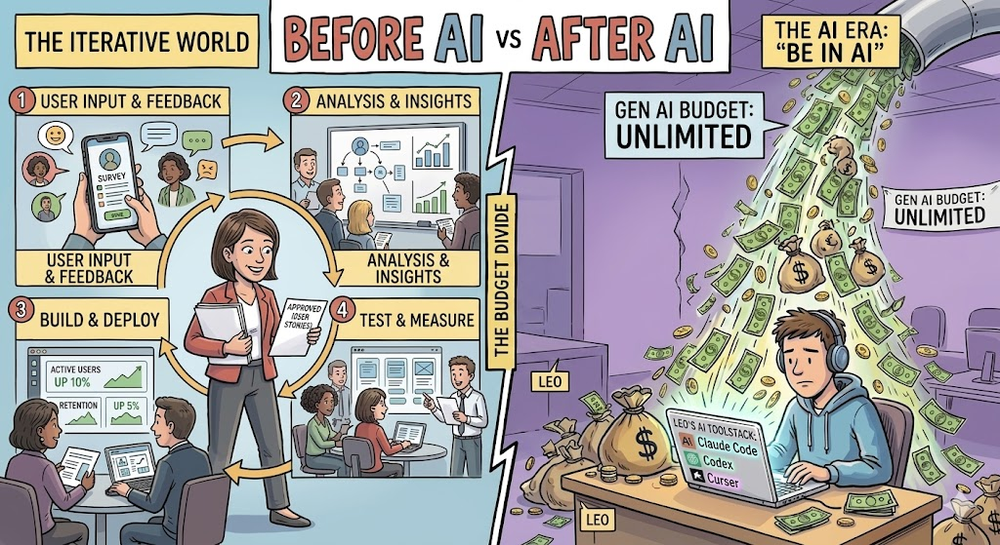
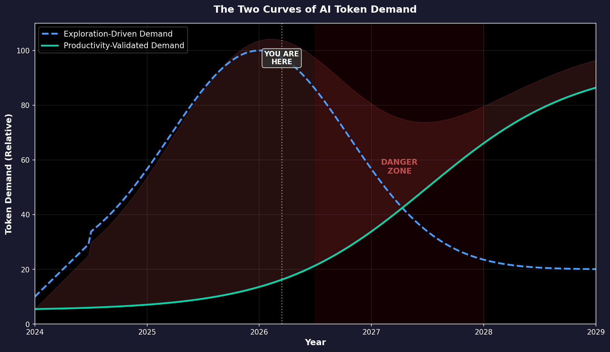
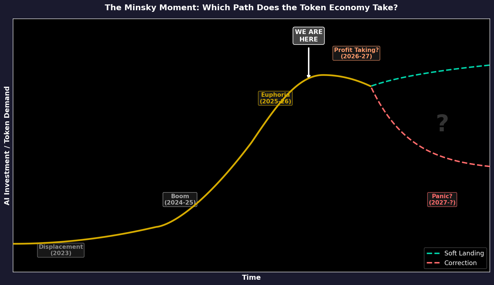

TL;DR
- AI token revenue is growing at historic rates — Cursor hit $2B ARR in 24 months, Anthropic crossed $14B ARR in 14 months. The “Anti-Bubble School” argues this proves the token economy is real and sustainable.
- But much of this revenue may be driven by a temporary exploration phase — companies overspending to “not miss the AI revolution” without validated ROI for projects.
- This pattern still resembles the dark fiber phenomenon. In the late 1990s, we built vast broadband infrastructure before anyone had Netflix or YouTube. The technology was right. The timeline was wrong. The investors went bankrupt.
- Tokens may be this generation’s broadband — genuinely needed eventually, but the current demand inflated by exploration budgets. There is real usage, but the usage might not be effective or sustainable.
- The question isn’t whether AI is transformative. The question is how much of today’s token demand is long-lasting, and how much is exploration money that vanishes once economy tightens.
The Revenue Numbers Look Amazing
I went to Nvidia GTC this year. Everyone is doing inference and the token economy is booming:
Cursor went from $100M to $2B in annualized revenue in under 24 months — the fastest scaling in B2B SaaS history. Anthropic crossed $14B ARR in February 2026, up from $1B just 14 months earlier. OpenAI tripled revenue to $20B in 2025 and is tracking $25B annualized in early 2026.
Jensen Huang, at GTC 2026, declared:
“The future data center is a token factory. The logic is simple: how many tokens you can produce determines how much revenue you can generate.”
He projects over $1 trillion in AI infrastructure demand through 2027. He’s already talking about giving every engineer a “token budget” alongside their base salary:
“I could totally imagine in the future every single engineer will need an annual token budget. I’m going to give them probably half of [their base pay] on top of it as tokens so that they could be amplified 10 times.”
Nvidia posted $215.9B in FY2026 revenue, up 65% year-over-year.
These numbers are real. The revenue is real. The usage is real. The chips are shipping. Nobody is making this up.
So what’s the problem?
The problem is that current token usage doesn’t necessarily mean they are effective. Revenue tells you how much people are spending. It doesn’t tell you how much value they’re getting back.

Revenue Growth ≠ Healthy Economy
Here’s the core argument of this post: revenue growth, by itself, tells you nothing about whether the token economy is sustainable.
Revenue tells you how much people are spending. It doesn’t tell you how much value they’re getting back. And right now, there are two very different forces driving token spending:
- Validated demand: companies spending on AI because it generates measurable returns. Examples including AI-driven customer service that reduces headcount, autonomous coding agents that replaces software engineering hours, or AI-assisted commercial generation.
- Exploration demand: companies spending because they have to try. It could be side projects in the company that burns hundres of thousands of dollars a month on tokens without eventually converting to any business value, just approved by management to “explore opportunities”. These exploration projects may never ship or generate revenue in the end. They are experiments, not production.
My argument: a significant chunk of today’s token revenue is exploration demand, not validated demand.
Think about it from first principles. Before AI, would a VP of Engineering approve $500K/month in engineering/compute resources for a project without a business case? Without testing market fit? Almost never. Budget processes existed precisely to prevent that.
But AI broke the budget process. The capabilities improved so fast — Opus 4.6 does things that were science fiction six months ago — that normal ROI discipline went out the window. Of course everyone needs to try. Of course the money flows. But “we need to try this” is not the same as “this is generating value.”
An anecdote that I heard recently: an engineer at a top tech company is burning at a speed of over $1 million USD if counted annually on AI tokens. The validated business value so far? Zero. It could bring values that is worth much more than the cost, but how many percentages of our vibe coded projects will bring values in the end? We don’t know, but people are racing in token consumption to not lose.
This is not an isolated anecdote:
- 42% of companies scrapped most of their AI initiatives in 2025, up from 17% the year before
- Only 5% of AI pilot programs achieve rapid revenue acceleration (MIT, August 2025)
- The average sunk cost per abandoned AI project: $4.2 million
For many of the experiments that people are conducting, the question is still “What can we do with this?” rather than “What value will this bring?” The fact that we’re still asking the former at scale suggests that a lot of today’s token demand is driven by exploration budgets, not production budgets. The moment the CFO asks “what did we get for this?” is the moment that exploration demand will be forced to answer the latter question.
Vibe Coding and the Illusion of Speed
Nowhere is the exploration-vs-production gap more visible than in vibe coding.
I’ve vibe coded. It’s exhilarating. You describe what you want, the AI writes it, you iterate in minutes instead of days. 92% of US developers now use AI coding tools daily. The speed is real.
But here’s the question nobody’s asking loud enough: what percentage of vibe-coded projects actually ship to production and generate revenue?
Before AI, you would never throw $50K/month at building a product without first validating that someone wanted it. You’d talk to customers. You’d build an MVP slowly, painfully — and that slowness was a feature, not a bug. It forced you to think about whether the thing was worth building at all.
Now the bottleneck is gone. Code is practically free. So people build first and ask questions later. The speed feels like productivity. But speed without direction is just expensive wandering.
It’s like ordering from the entire menu at a new restaurant because you just got a raise. You’ll eat well tonight. But you’re not going to order like this every night once you look at your bank statement one week later.

The graph above illustrates this discrepancy. There are two curves of token demand: exploration-driven demand (which peaks and then declines as companies finish experimenting and budgets tighten) and productivity-validated demand (which starts slow but grows steadily as real use cases crystallize). The danger zone is the gap between them — the period where exploration demand dries up before productivity demand has grown enough to replace it.
The Jevons Paradox Trap
The popular counter-argument is this: “But tokens are getting cheaper! Demand will explode regardless!”
And tokens are getting cheaper. Dramatically so. The cost per million tokens for GPT-3.5-equivalent performance fell from $20 in late 2022 to $0.07 in October 2024 — a 280x decrease in two years. The decline is accelerating.
This is where people invoke the Jevons Paradox: when a resource gets cheaper, total usage increases so much that total spending actually goes up. Coal became more efficient in the 1860s; Britain used more coal, not less. Bandwidth got cheaper; we used exponentially more. Surely the same applies to tokens.
And so far, it has. Even as per-token costs dropped 1,000x, total enterprise AI spending surged 320% in 2025 alone.
But here’s the catch: Jevons Paradox only works when the underlying utility is real and elastic. Coal was genuinely useful — every pound powered real factories, real trains. Bandwidth was genuinely useful — every megabit carried real video, real commerce. The cheaper resource unlocked real economic value that people would willingly pay for.
Here’s an analogy. Imagine a gym that drops its monthly fee from $100 to $1. Membership will explode. Total revenue might even go up. But maybe people do not want to go to gym at all! It takes time for the habits to grow in people. It will probably be the same thing with AI. Before people become AI native and the support for AI is mature enough, the effective usage ceiling will be limited.
Dark Fiber: We’ve Seen This Movie Before
Tokens are this generation’s broadband. And I mean that in both the good way and the terrifying way.
In the late 1990s, telecom companies laid 80+ million miles of fiber optic cable across the United States. The thesis was compelling: internet traffic was doubling every 100 days (a claim by WorldCom that turned out to be fabricated — the real rate was annual doubling). The revenue charts for infrastructure companies looked incredible. Investors poured billions in.
Four years after the bubble burst, 85-95% of that fiber remained dark — carrying no traffic, generating no revenue. Corning’s stock went from ~$100 to ~$1. WorldCom went bankrupt.
But here’s the twist that makes this story relevant, not just cautionary: the fiber eventually got used. A decade later, Netflix, YouTube, and the cloud economy ran on those exact same cables. We genuinely needed all that bandwidth. The technology was right. The demand was real — eventually. But the timeline was wrong, and the investors who built for 2010 demand in 2000 mostly went bankrupt before anyone had invented streaming.
The parallel to tokens is almost exact. I genuinely believe tokens will be as fundamental to the next economy as bandwidth is to the current one. Every developer will consume more tokens than today. Jensen’s vision of “token factories” will come true. However, the current ecosystem is still in the “dark fiber” phase.
Let’s take software engineering as an example. Vibe coded projects deteriorate once you start adding new features. Our github repository descriptions were never for AI to read. There is little descriptions of what a repo should do and should not do (since open source projects usually expand their scope). There is no standard way to describe the relationship between different repos. Thus, when we vibe code a huge project, the design boundaries quickly break down and the complexity skyrockets. It will be fine for researchers who write their code for a specific paper, but it will be a nightmare for production software engineering.
So Which Stage Are We In?

I think we’re somewhere between the gold rush and the audit.
The excitement is real and justified — frontier models keep getting better, genuinely new capabilities keep appearing, and there are domains where the productivity gains are undeniable. People write code with AI every day. It’s not a gimmick. When I’m in the flow with Claude Code, I’m legitimately 3-5x faster on certain tasks. (Claude Code wrote this sentence itself XD.)
But I do spend most of my tokens on random projects that highly likely will become a waste of code. These projects are fun to build, but I would not pay even hundreds of dollars a month for them if I had to pay out of pocket. I have the luxury to experiment with tokens because of the subsidy from Anthropic and my lab subscription.
I expect similar situations to happen in enterprises. Without the generosity of the exploration budget, many of the projects that are currently burning tokens would never have been approved in the first place.
The graph above frames the question. We are somewhere between Euphoria and Profit Taking — the point where the curve could either keep climbing toward a soft landing or tip over into correction. Which path we take depends on a single thing: whether the real use cases — the Netflix and YouTube equivalents of the token economy — show up before the exploration money runs out.
Conclusion
This post is not to predict a crash but to share a more reasonable analogy that I find for the current token economy. People have been arguing whether we are in a similar position to the dot-com bubble and the “anti-bubble school” argument has always been that “there is revenue!” This blog post tries to analyze one step deeper into the revenue story.
At least the usage is still growing in 2026 March.
Disclaimer: This blog post was created with help from Claude Code. Views are solely from the author and do not reflect employer values. This is not financial advice.